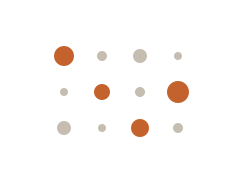

Bubble / dot matrix
About
A bubble or dot matrix is a grid in which one axis lists themes and the other lists participants (or sessions), and a dot at each intersection encodes whether — and how strongly — that participant expressed that theme. Dot size or color carries magnitude, turning a wall of qualitative codes into a scannable map of prevalence. It is a close cousin of the coded quote matrix, but where that artifact preserves the words, the bubble matrix emphasizes the pattern: how widely a theme spreads across the sample, and where intensity concentrates.
When to use
Use a bubble/dot matrix when you want to show the prevalence or intensity of themes across participants in a rigorous, countable way — strengthening qualitative findings with a visible sense of how many and how strongly.
When not to use
Avoid it for very small samples, where a handful of dots implies more pattern than the data supports, and prefer a coded quote matrix when the exact wording of participant statements carries more weight than their frequency.
References
Examples
Click any example to view full size and visit the original source.